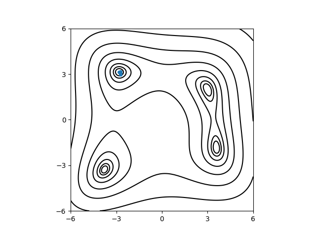

テンソル列最適化（TTOpt）#
ここでは、テンソル列（テンソルトレイン）に基づく最適化アルゴリズム TTOpt を用いて、Himmelblau 関数の最小化問題を解析する方法について説明します。 アルゴリズムの概要やパラメータの意味の詳細は、テンソル列最適化 ttopt を参照してください。
サンプルファイルの場所#
サンプルファイルは sample/analytical/ttopt にあります。
フォルダには以下のファイルが格納されています。
input.tomlメインプログラムの入力ファイル
do.sh本チュートリアルを一括計算するために準備されたスクリプト
plot.py計算結果（探索の履歴）を Himmelblau 関数の等高線上にプロットするスクリプト
入力ファイルの説明#
メインプログラム用の入力ファイル input.toml を作成します。記述方法の詳細については「入力ファイル」の項を参照してください。
[base]
dimension = 2
output_dir = "output"
[solver]
name = "analytical"
function_name = "himmelblau"
[runner]
[runner.log]
interval = 20
[algorithm]
name = "ttopt"
seed = 12345
[algorithm.param]
max_list = [6.0, 6.0]
min_list = [-6.0, -6.0]
[algorithm.ttopt]
q_points = 20
max_f_eval = 1000
save_eval_history = true
[base], [solver], [runner] のセクションについては Nelder-Mead 法による探索 (minsearch) の場合と同様です。
[algorithm] セクションでは、使用するアルゴリズムとその設定をします。
nameは使用するアルゴリズムの名前です。このチュートリアルではttoptを指定します。seedは乱数の初期値を指定します。
[algorithm.param] セクションでは、探索するパラメータの範囲を指定します。
min_listとmax_listは、それぞれ各次元の探索範囲の下限と上限を並べたリストです。
[algorithm.ttopt] セクションでは、TTOpt に関するパラメータを指定します。
q_pointsは各次元のサブモード数（テンソル脚の本数）です。整数を指定すると全次元に同じ値が使われます。p_points（省略時は各次元で 2）と合わせて離散化の細かさが決まります。詳細は テンソル列最適化 ttopt を参照してください。max_f_evalは、最適化中に行う関数評価回数の上限です。save_eval_historyをtrueにすると、評価した点の履歴がoutput/ttopt_eval_history.txtに追記されます。
ここではデフォルト値を用いるため省略しましたが、その他のパラメータ（p_points, r_max など）については「入力ファイル」の章および テンソル列最適化 ttopt を参照してください。
計算の実行#
最初にサンプルファイルが置いてあるフォルダへ移動します（以下、ODAT-SE パッケージをダウンロードしたディレクトリ直下にいることを仮定します）。
$ cd sample/analytical/ttopt
メインプログラムを実行します。計算時間は通常の PC で数秒程度で終わります。
$ odatse input.toml | tee log.txt
一括で実行する場合は do.sh を用いても構いません。
$ sh do.sh
実行すると output ディレクトリの下にランクごとのサブフォルダ（本例では output/0/）が作成され、標準出力には設定値や進行状況が表示されます。最適化の経過（関数評価回数ごとの、これまでの最良点と最良値）は output/ttopt_history.txt に書き出されます。
ファイル先頭の # で始まる行は列の説明です。
# $1: count
# $2: x_opt[0]
# $3: x_opt[1]
# $4: fx_opt
8 -2.731026392961877e+00 2.962437593877404e+00 1.247312995590882e+00
24 -2.731026392961877e+00 2.962437593877404e+00 1.247312995590882e+00
...
1 列目はその時点までの関数評価回数、続く列がこれまでに得られた最良点の座標と目的関数値 f(x) です。
ハイパーパラメータの一覧は output/ttopt_hyperparameters.txt、最終的な最良解の要約は output/res.txt なども参照できます。
たとえば res.txt は
fx = 7.17954154082022e-05
x1 = -2.805195622630713
x2 = 3.1299792575638374
となります。
計算結果の可視化#
output/ttopt_history.txt の 2 列目・3 列目は、各記録時点での最良点の x1, x2 に対応します。サンプル付属の plot.py を使うと、Himmelblau 関数の等高線上にその軌跡を重ねて PDF に保存できます。
$ python3 ./plot.py --xcol=1 --ycol=2 --format="-o" --output=output/res.pdf output/ttopt_history.txt
上記を実行すると output/res.pdf が作成され、等高線の上に TTOpt による最良点の更新の履歴がプロットされます。
かなり早い段階から最小点に近づいていることがわかります。

TTOpt による Himmelblau 関数の最小化の例。黒線は関数値の等高線、青点は ttopt_history.txt に記録された最良点の更新履歴です。#